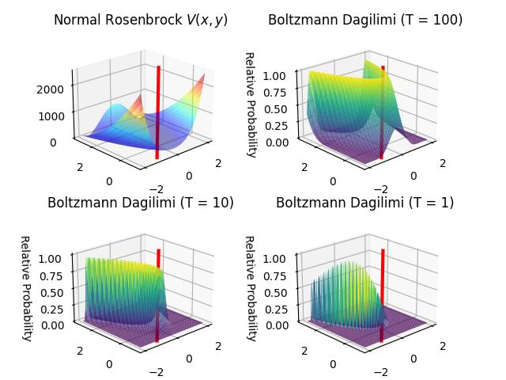
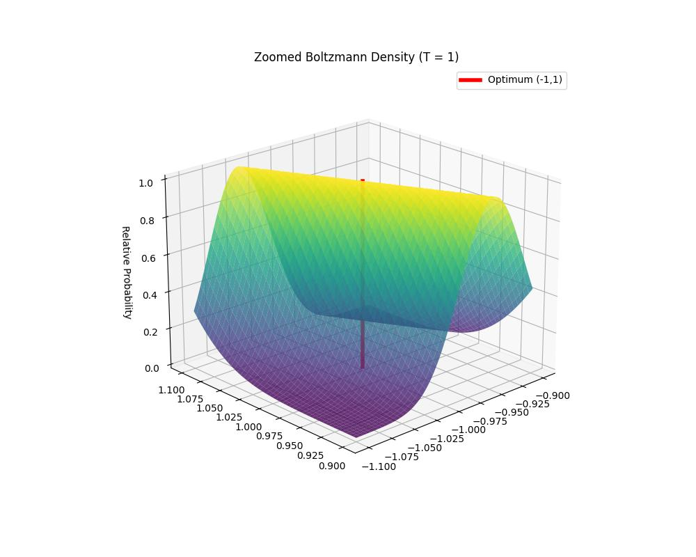

“Her optimizasyon problemi kılık değiştirmiş bir sonsal örnekleme problemidir” denebilir mi? Bu kışkırtıcı kavramsal bir iddia olurdu. Katı matematiksel açıdan bakıldığında bu bir sezgisel kural, ancak teorik fizik ve Bayes istatistik perspektifinden son derece isabetlidir.
Matematiksel köprü şudur: Gibbs dağılımı. Argümanın özü, Gibbs / Boltzmann dağılımında yatmaktadır. Optimizasyonda, \(f(x)\)’i maksimize eden \(x^*\)’i bulmak isteriz. Örneklemede ise bir olasılık dağılımı \(p(x)\)’ten örnekler çekmek isteriz. Herhangi bir optimizasyon problemini, bir dağılım tanımlayarak örnekleme problemine dönüştürebiliriz:
\[p(x) \propto \exp\left(\frac{f(x)}{T}\right)\]
Burada \(T\) bir “sıcaklık” parametresidir.
Başka bir deyişle, optimizasyonda şunu bulmak isteriz: \[x^* = \arg\min f(x)\]
Örneklemede ise bir dağılımdan örneklemler almak isteriz:
\[p(x) = \frac{1}{Z} \exp\left(-\frac{f(x)}{T}\right)\]
burada \(Z\) bölüşüm fonksiyonu (normalleştirme sabiti) ve \(T\) bir “sıcaklık” parametresidir.
\(T\) yüksek olduğunda: Dağılım düzdür; örnekleme, manzara üzerinde rastgele bir yürüyüş gibidir.
\(T\) düşük olduğunda: Dağılım, \(f(x)\)’in zirveleri etrafında yoğun biçimde yığılır.
\(T \to 0\) iken: Dağılım, tam olarak \(f(x)\)’in küresel maksimumu üzerinde ortalanmış bir Dirac delta fonksiyonuna (ya da bunların bir kümesine) çöker. Olasılık kütlesi tamamen \(f(x)\)’in küresel minimumu üzerinde yoğunlaşır.
Dolayısıyla \(f(x)\)’in küresel optimumunu bulmak, sıcaklık sıfıra giderken \(p(x)\) sonsal dağılımından örneklemeyle matematiksel olarak eşdeğerdir.
\(T \to 0\) limitinde, sonsal dağılımdan örnekleme, küresel optimumu bulmakla eşdeğer hale gelir. Bu nedenle, bir optimizasyon problemi, sıcaklığın mutlak sıfıra itildiği bir örnekleme problemi olarak görülebilir.
Bu yalnızca teorik bir merak konusu değildir; birçok önemli algoritmanın temelidir:
Simule Edilen Yumusatma (Simulated Annealing): Bu teknik tanimi baglaminda Gibbs dağılımından örnekleme ve sistemi küresel optimuma “dondurarak” yavaş yavaş \(T\)’yi düşürme süreci, yani tıpatıp üstte tarif ettiğimiz yaklaşım. Bu arada “annealing” metalurjiden gelen bir kavram.
SGLD (Stokastik Gradyan Langevin Dinamiği): Bu, Stokastik Gradyan İnişi (SGD) ile Langevin Dinamiği arasında bir melezdir. SGD’nin özünde bir örnekleme algoritması olduğunu, mini gruplardan kaynaklanan “gürültünün” sıcaklık görevi görerek modelin yerel minimumlara takılmasını engellediğini gösterir.
Optimizasyonu örnekleme olarak görmek çeşitli avantajlar sunar:
Yerel Optimumlardan Kaçmak: Saf optimizasyon (Gradyan İnişi gibi) “açgözlüdür” ve yerel minimumlara takılır. Örnekleme ise “keşifçidir.” Optimizasyonu örnekleme olarak ele alarak, algoritmanın yetersiz çukurlardan “kaçmasını” sağlayan rastlantısallık katarız. Örnekleme, teorik olarak tüm manzarayla ilgilenir. Bir örnekleme yaklaşımı, açgözlü bir optimizasyon yaklaşımına kıyasla yerel minimumlara karşı temelden daha dayanıklıdır.
Belirsizlik Nicelemesi: Optimizasyon size tek bir nokta (en “iyi” cevap) verir. Örnekleme ise bir dağılım verir. Sonsal dağılım optimum etrafında “düz”se, bu size pek çok farklı çözümün en iyisine yakın olduğunu söyler; bu da model sağlamlığını anlamak için hayati önem taşır. Bir sonsal dağılımın güvenlik aralıklarını hesaplayabiliriz. Nihai tek nokta ile yapacak fazla bir şey yoktur.
Düzenlileştirme (Regularization): Örnekleme bakış açısında, onsel dağılım bir düzenlileştirici görevi görür. Ağırlık azalmasıyla (\(\ell_2\) düzenlileştirme) yapılan optimizasyon, Gaussian öncülüyle MAP tahmini bulmakla tamamen aynıdır.
Bir fonksiyonu olasılık yoğunluğuna çevirmek için niye \(\exp\) kullandık? Bazı sebepler var.
Negatif Olmama: \(e^{-f(x)}\) üstel fonksiyonu, herhangi bir gerçek değerli maliyeti kesinlikle pozitif bir değere eşler ve böylece bir olasılık yoğunluk fonksiyonunun ilk gereksinimini karşılar.
Sıra Korunumu: Üstel fonksiyon monotonsal (ya hep artış, ya da hep azalış) olduğundan, tercüme ettiği fonksiyonun göreli sıralamasını korur. Eğer \(f(x_1) < f(x_2)\) ise, o zaman \(e^{-f(x_1)} > e^{-f(x_2)}\). Bu, fonksiyonunuzun küresel minimumunun dağılımınızın modu (en yüksek noktası) olmaya devam etmesini sağlar.
Boltzmann dağılımı, varsayabileceğimiz en “dürüst” dağılımdır. Belirli bir beklenen maliyete \(\langle f \rangle\) sahip olan ancak bunun dışında mümkün olduğunca tarafsız olan bir olasılık dağılımı bulmak istiyorsanız, Maksimum Entropi İlkesi çözümün şu formu alması gerektiğini kanıtlar: \[P(x) \propto \exp(-\beta f(x))\]. \(\exp\) kullanmak, amaç fonksiyonunun kendisi tarafından zorunlu kılınmayan gizli varsayımlar veya “örüntüler” eklenmediğini güvence altına alır.
Ölçek Ayrımı (Sıcaklık Parametresi): Üstel fonksiyon, bir “sıcaklık” veya “ters sıcaklık” parametresi olan \(\beta = 1/T\)’nin tanıtılmasına olanak tanır. Bu, SMC’de benzersiz bir mekanik avantaj sağlar:
Düzleştirme ve Keskinleştirme: \(T\) yüksek olduğunda, dağılım neredeyse düzgündür ve parçacıkların tüm durum uzayını keşfetmesine olanak tanır. \(T \to 0\) iken, üstel fonksiyon değerler arasındaki farkları “gerer” ve olasılık kütlesinin küresel minimumlar üzerinde yığılmasına neden olur.
Oranların Ölçek Değişmezliği: İki durum arasındaki olasılık oranı yalnızca maliyetleri arasındaki farka bağlıdır:
\[\frac{P(x_1)}{P(x_2)} = \exp\left(-\frac{f(x_1) - f(x_2)}{T}\right)\]
Bu, örnekleyiciyi fonksiyonun mutlak büyüklüğü yerine göreli iyileştirmelere duyarlı kılar.
SMC’de Matematiksel Kolaylık: Sıralı Monte Carlo’da, parçacıklarınızı güncellemek için önem ağırlıkları hesaplamanız gerekir. \(T_n\) sıcaklığındaki bir dağılımdan \(T_{n+1}\)’e geçerken, artımlı ağırlık şöyledir: \[w = \frac{\exp(-f(x)/T_{n+1})}{\exp(-f(x)/T_n)} = \exp\left(-f(x) \left( \frac{1}{T_{n+1}} - \frac{1}{T_n} \right) \right)\]
Logaritmik Doğrusallık: Üslerin özellikleri sayesinde, bu güncellemeler logaritmik uzayda toplamsal hale gelir. Bu, sayısal taşma/küçüme sorunlarını önler ve Etkin Örneklem Boyutu’nun (ESS) hesaplanmasını basitleştirir.
Türevi alınabilirlik: Üstel fonksiyon pürüzsüzdür ve sonsuz kez türevlenebilir.
Toplamsallik ve Bağımsız Değişkenler: Amaç fonksiyonunuz bağımsız bileşenlerin toplamıysa, \(f(x, y) = g(x) + h(y)\), üstel dönüşüm bu toplamı olasılıkların bir çarpımına dönüştürür: \[\exp(-(g(x) + h(y))) = \exp(-g(x)) \cdot \exp(-h(y))\]. Bu, verimli yüksek boyutlu örneklemenin temel taşı olan ortak dağılımın çarpanlara ayrılmasına olanak tanır.
Örnek
Çetin bir optimizasyon örneği bulalım, Rosenbrock fonksiyonu. Bu fonksiyonu \(\exp\) ile Boltzmann dağılımı haline döndürüyoruz, ve altta farklı \(T\)’ler le nasıl dağılım çeşitleri elde ettiğimizi görebiliyoruz.
import numpy as np
import matplotlib.pyplot as plt
from matplotlib import cm
def Rosenbrock(x, y):
return (1 + x)**2 + 100*(y - x**2)**2
G = 250
x = np.linspace(-2, 2, G)
y = np.linspace(-1, 3, G)
X, Y = np.meshgrid(x, y)
Z_energy = Rosenbrock(X, Y)
temperatures = [100, 10, 1]
fig = plt.figure()
p_opt = [-1,1]
ax1 = fig.add_subplot(2, 2, 1, projection='3d')
ax1.plot_surface(X, Y, Z_energy, rstride=5, cstride=5, cmap='jet', alpha=0.5)
line_x = [p_opt[0], p_opt[1]]
line_y = [p_opt[0], p_opt[1]]
line_z = [0, np.max(Z_energy)] # From bottom to the top of the plot
ax1.plot(line_x, line_y, line_z, color='red', linewidth=3, label='Optimum (1,1)')
ax1.set_title("Normal Rosenbrock $V(x,y)$")
ax1.view_init(21, -133)
for i, T in enumerate(temperatures):
ax = fig.add_subplot(2, 2, i + 2, projection='3d')
Z_boltz = np.exp(-(Z_energy - np.min(Z_energy)) / T)
Z_boltz /= np.max(Z_boltz)
surf = ax.plot_surface(X, Y, Z_boltz, rstride=5, cstride=5, cmap='viridis', alpha=0.8, edgecolor='none')
line_x = [p_opt[0], p_opt[1]]
line_y = [p_opt[0], p_opt[1]]
line_z = [0, np.max(Z_boltz)]
ax.plot(line_x, line_y, line_z, color='red', linewidth=3, label='Optimum (1,1)')
ax.set_title(f"Boltzmann Dagilimi (T = {T})")
ax.set_zlabel("Relative Probability")
ax.view_init(21, -133)
plt.tight_layout()
plt.savefig('stat_230_opt_01.jpg')
Dikey kırmızı çizgi Rosenbrock’un bilinen minimum noktasını gösteriyor, (-1,1). \(P(x)\)’e gelirsek, matematiksel tanıma göre \(T\) yüksekken Boltzmann yoğunluğu \(P(x)\) kabaca \(f(x)\) gibidir, \(T \to 0\) iken (optimum noktası bağlamında) \(f(x)\)’e daha yaklaşır. Üstteki resimlerde \(T=100\) değerinde minimum nokta \(P(x)\)’in genel olarak maksimuma yakın olan bölgelerine işaret ediyor (eksi çarpımı ile fonksiyon ters döndüğü için minimum maksimum haline geldi).
Aynı mantığı takip edersek \(T=1\) grafiğinde net maksimal bir tepe görmeliyiz, fakat bunu göremiyoruz, sebebi grafiklemenin çözünürlüğü, yani maksimum orada ama çok detaylı bir çözünürlük ile gözüküyor. Alttaki kodda -1,1 etrafına odaklanırsak,
import numpy as np
import matplotlib.pyplot as plt
x_zoom = np.linspace(-1.1, -0.9, 250)
y_zoom = np.linspace(0.9, 1.1, 250)
X_z, Y_z = np.meshgrid(x_zoom, y_zoom)
Z_energy_z = Rosenbrock(X_z, Y_z)
T = 1
Z_boltz_z = np.exp(-(Z_energy_z - np.min(Z_energy_z)) / T)
Z_boltz_z /= np.max(Z_boltz_z) # Normalize peak to 1.0
fig, ax = plt.subplots(subplot_kw={'projection': '3d'}, figsize=(10, 8))
ax.plot_surface(X_z, Y_z, Z_boltz_z, rstride=5, cstride=5, cmap='viridis', alpha=0.8)
ax.plot([-1, -1], [1, 1], [0, 1], color='red', linewidth=4, label='Optimum (-1,1)')
ax.set_title(f"Zoomed Boltzmann Density (T = {T})")
ax.set_zlabel("Relative Probability")
ax.legend()
ax.view_init(21, -133)
plt.savefig('stat_230_opt_02.jpg')
Orada bir tepe olduğunu görüyoruz.
Şimdi Rosenbrock’u dağılım haline çevirilmiş halini Metropolis (MCMC) yaklaşımı ile gezelim. O bir yoğunluk olduğuna göre onu her dağılımı gezebilen herhangi bir yaklaşım ile gezebilmeliyiz. İşin optimizasyon kısmını halledebilmek için de bu gezimi yaparken sürekli o ana kadar gördüğümüz en minimum değeri (ve ona tekabül eden kordinatları) akılda tutarız. Gezim bitince bu değerleri rapor ederiz.
Dikkat: minimumu akılda tutuyoruz, çünkü değerleri Rosenbrock fonksiyonunun kendisini çağırarak hesaplıyoruz.
from numpy.random import multivariate_normal as mvn
proposal_var = 0.005
burn_in = 100
n_iters = 5000
T = 0.18 # Low temperature to push particles toward the minimum
curr = np.random.uniform(low=[-3, -3],high=[3, 10],size=2 )
min_p_coord = [0,0]
min_p_val = 1000
accepted_count = 0
for i in range(1, n_iters):
prop = curr + mvn(mean=np.zeros(2), cov=np.eye(2) * proposal_var)
energy_curr = Rosenbrock(*curr)
energy_prop = Rosenbrock(*prop)
alpha = min(1, np.exp((energy_curr - energy_prop) / T))
if np.random.uniform() < alpha:
curr = prop
accepted_count += 1
if i > burn_in:
if energy_curr < min_p_val:
min_p_coord = curr
min_p_val = energy_curr
print ('minimum nokta',min_p_coord)
print ('minimum deger',min_p_val)
acceptance_rate = accepted_count / n_iters
print(f"Kabul Orani: {acceptance_rate:.2%}")minimum nokta [-0.9798643 0.95965552]
minimum deger 0.00042834457379303055
Kabul Orani: 20.52%Üstteki değerler hakikaten Rosenbrock’un bilinen minimum noktasına
oldukca yakındır. Kod içindeki bir kısmı aydınlatalım, niye
min(1, np.exp((energy_curr - energy_prop) / T)) kullandık?
Çünkü bir Metropolis örnekleyici iki olasılık hesabının oranına göre
hareketi kabul eder, diyelim prop teklif, curr
o andaki durumu temsil ediyorsa,
\[ \alpha = \min\left(1, \frac{P(prop)}{P(curr)}\right) \]
Elimizdeki dağılım Boltzmann dağılımı olduğu için \(P(x) \propto \exp(-V(x)/T)\) formülü var, o zaman oran (bir bölüm işlemi) şu hale dönüşür,
\[ \frac{P(prop)}{P(curr)} = \frac{\exp(-V(prop)/T)}{\exp(-V(curr)/T)} = \exp\left(\frac{V(curr) - V(prop)}{T}\right) \]
Bu formül kodda görülen hesaptır.
Şimdi dağılımı bir parçacık filtresi ile gezelim. Aynı şekilde gezim sırasın minimum değerleri kayda geçiyoruz. Döngü içindeki ufak sarsma adımına dikkat, parçacık çeşitliliğini arttırmak için eklenmesi gerekiyor.
n_particles = 1000
n_steps = 100
n_mcmc_steps = 5
proposal_var = 0.005
T_start = 100.0
T_end = 1
particles = np.zeros((n_particles, 2))
particles[:, 0] = np.random.uniform(-3, 3, n_particles) # Initial X
particles[:, 1] = np.random.uniform(-3, 10, n_particles) # Initial Y
# dikkat linspace degil, geomspace, logaritmic azalma yapiliyor
temperatures = np.geomspace(T_start, T_end, n_steps)
min_val = float('inf')
min_coord = [0, 0]
for T_curr in temperatures:
energies = Rosenbrock(particles[:, 0], particles[:, 1])
step_min_idx = np.argmin(energies)
if energies[step_min_idx] < min_val:
min_val = energies[step_min_idx]
min_coord = particles[step_min_idx].copy()
unnorm_weights = np.exp(-(energies - np.min(energies)) / T_curr)
weights = unnorm_weights / np.sum(unnorm_weights)
indices = np.random.choice(np.arange(n_particles), size=n_particles, p=weights)
particles = particles[indices]
curr_energies = Rosenbrock(particles[:, 0], particles[:, 1])
# Ufak MCMC adimi, "sarsma"
for _ in range(n_mcmc_steps):
noise = np.random.normal(0, np.sqrt(proposal_var), size=(n_particles, 2))
prop = particles + noise
prop_energies = Rosenbrock(prop[:, 0], prop[:, 1])
diff = (curr_energies - prop_energies) / T_curr
alpha = np.exp(np.clip(diff, -100, 0))
accept = np.random.uniform(size=n_particles) < alpha
particles[accept] = prop[accept]
curr_energies[accept] = prop_energies[accept]
print(f"Final Best Coord: {min_coord}")
print(f"Final Best Value: {min_val}")Final Best Coord: [-1.00018448 1.00031523]
Final Best Value: 3.2312280609237785e-07Kodlar
[devam edecek]